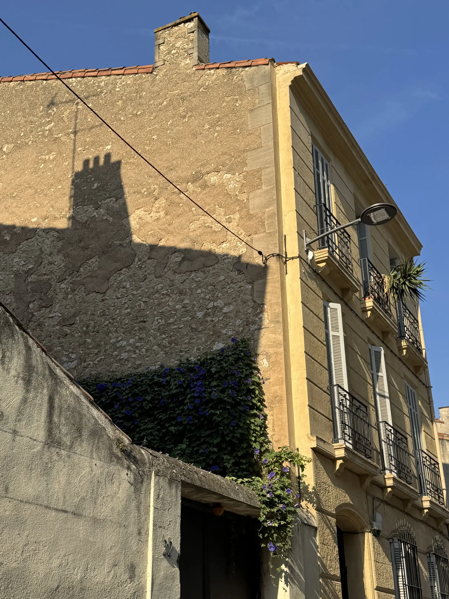
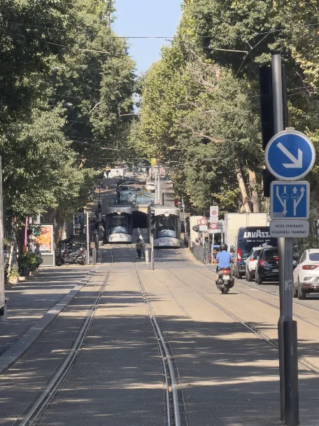

13005 : le quartier donne le contexte, le bien réel décide
Une estimation utile descend progressivement en précision : arrondissement, secteur, rue, immeuble, étage puis appartement. Le prix moyen permet de s’orienter ; il ne suffit pas pour fixer la valeur d’un logement précis.

Environ 3 500 €/m² sur les mutations publiées 2021–2025
Ce repère DVF donne un ordre de grandeur pour le 13005. Il ne constitue pas l’estimation d’un appartement précis.
Deux adresses proches peuvent déjà raconter des marchés différents
Les agrégats DVF 2021–2025 donnent notamment des repères autour de 3 550 €/m² boulevard Chave, 3 750 €/m² rue Sainte-Cécile, 3 150 €/m² boulevard Baille, 3 700 €/m² rue Saint-Pierre et 3 950 €/m² boulevard Eugène-Pierre.
Ces chiffres restent des points d’appui. L’étage, l’immeuble, le bruit, la lumière, l’extérieur, le DPE, l’état et la copropriété peuvent encore modifier fortement la lecture.
Un même arrondissement, plusieurs lectures résidentielles
La page ne cherche pas à figer des frontières exactes. Elle distingue les grandes lectures utiles avant de revenir à la rue et au logement.
Chave / Camas
Vie de quartier, commerces, tramway et forte projection résidentielle.
Camas / Sébastopol
Centralité de quartier, commerces et rues à relire une par une.
Baille / Timone / Conception
Métro, hôpitaux, facultés, flux et usages parfois plus locatifs.
Saint-Pierre
Accessibilité, équipements, axes et diversité du bâti.
Blancarde
Transports, gare, tramway et continuité avec le 13004.
Eugène-Pierre / Cinq-Avenues / Longchamp
Des lectures distinctes à confronter à la rue exacte et au bien réel.
Six éléments peuvent faire bouger fortement la lecture
Une fois le secteur et la rue identifiés, l’estimation revient au logement lui-même. Dans le 13005, six familles de critères méritent particulièrement d’être confrontées au repère de marché.
Rue / tronçon
Calme, passage, commerces, transports et position exacte sur l’axe changent la perception.
Immeuble / copropriété
Entretien, parties communes, charges, travaux et qualité générale du bâti comptent.
Étage / ascenseur
Dans l’ancien, hauteur, accessibilité et présence d’un ascenseur peuvent modifier la demande.
Lumière / bruit
Exposition, traversant, vis-à-vis, côté rue ou côté cour changent l’usage quotidien.
Extérieur
Balcon, terrasse, patio, cour ou jardin valent d’abord par leur usage réel, leur calme et leur intimité.
État / DPE / travaux
État intérieur, performance énergétique et travaux à prévoir influencent la projection de l’acquéreur.

Un extérieur n’a de valeur que s’il améliore réellement l’usage
Terrasse, balcon, patio, cour, jardin ou rez-de-jardin ne produisent pas automatiquement la même valeur. Ce qui compte est la possibilité réelle d’en profiter : lumière, profondeur, calme, intimité, accès et cohérence avec le logement.
Une pergola, un aménagement paysager ou une piscine peuvent renforcer cette valeur d’usage, mais demandent aussi de relire entretien, sécurité, voisinage, copropriété, conformité et contraintes éventuelles.
Approfondir la valeur d’une terrasse, d’un balcon ou d’un jardin à Marseille
Passer de l’arrondissement aux secteurs et aux rues
Ces lectures locales permettent de descendre d’un niveau supplémentaire avant de revenir au logement précis.
Le bon repère est celui qui reste défendable face au bien réel
Un prix trop éloigné de la réalité du logement peut fragiliser les premières semaines de commercialisation. Avant de publier, il est utile de confronter le secteur, la rue, l’immeuble, l’étage, l’extérieur, le DPE, l’état et les alternatives disponibles pour les acheteurs.
Deux appartements de même surface peuvent ainsi justifier des lectures différentes, même lorsqu’ils se trouvent à quelques rues l’un de l’autre.
Estimer un appartement dans le 13005
Peut-on estimer un appartement avec un prix moyen au m² ?
Un prix moyen donne un repère de départ. Il doit ensuite être confronté au secteur, à la rue, à l’immeuble et aux caractéristiques réelles du logement.
Pourquoi deux rues proches peuvent-elles avoir des lectures différentes ?
Parce que l’environnement immédiat, le bruit, les transports, le bâti, les usages et la demande peuvent évoluer rapidement d’une adresse à l’autre.
Que faut-il transmettre pour une première lecture ?
Une adresse, une surface, un étage et quelques caractéristiques du logement suffisent déjà pour commencer à confronter le bien aux repères disponibles.
Vous avez une adresse précise dans le 13005 ?
Une adresse, un étage, une surface et quelques caractéristiques suffisent pour commencer à confronter le repère de marché au bien réel.